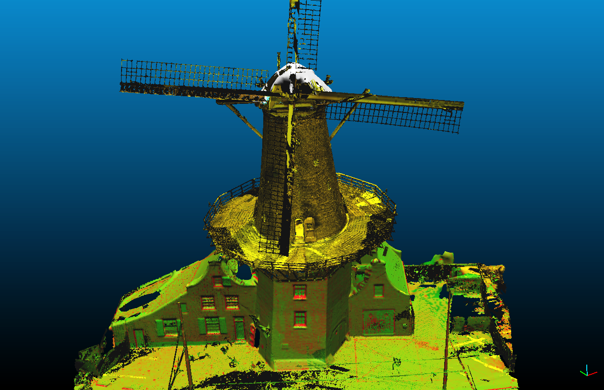
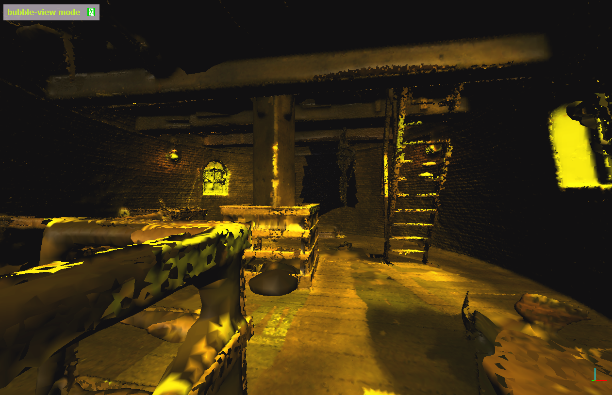
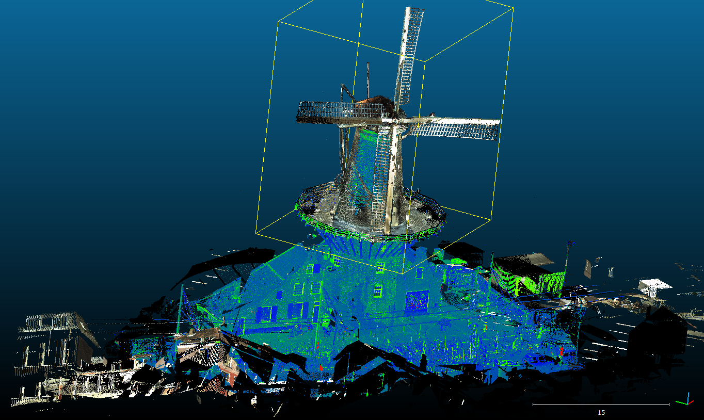
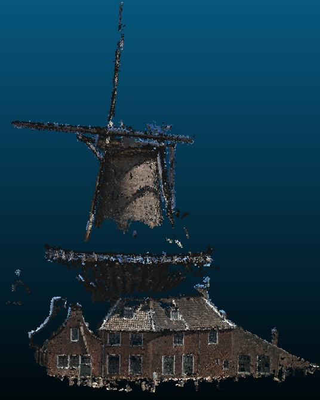

UDMV 2015 Contest
3D Modelling of a Complex Urban Structure
Deadline for submissions:
October 16, 2015 (separate from paper submission for the workshop)

The objective of this contest is to give opportunity to researchers to evaluate and share methods that they have developed for 3D modelling of complex urban structures.
A dataset of a recent terrestrial LiDAR acquisition of a historical windmill in Delft (exterior and interior) is shared, and researchers are invited to develop the best use of it, showcasing their work and interest. For instance, an idea would be to generate a full 3D model of the historical windmill using its exterior and interior laser scanning point clouds, or to develop a nice visualisation.
Contributing to the contest is open to researchers with expertise from various disciplines, such as but not limited to computer vision, remote sensing, 3D modelling, and visualisation.
The UDMV 2015 Contest is organised as a part of the 3rd Eurographics Workshop on Urban Data Modelling and Visualisation (UDMV), which will be held in Delft (Netherlands) in November 2015. The contest dataset is provided by TU Delft Library as an open public data set. The participation in this contest is
FREE, and it does not entail a participation at the workshop (albeit it is encouraged).
Contributions in following topics are welcome, however, we encourage creativity and do not limit the topics:
- Generating interior/exterior full mesh model of the windmill
- Registration of points
- Visualisation
- Data compression
- ...

Deliverables
Contributors should submit the following:
- An extended abstract which explains their method and results (2-3 pages). Please note that authorship is limited to 3 people.
- Applicable supplementary material, such as a 3D model and/or video.
Prizes
The first 3 submission with the highest score will be awarded with a diploma. We are currently looking for sponsors to provide prizes such as cash or vouchers.
Post-contest publication:
The best submissions will be included in a paper describing the contest and the results, and submitted to an international scientific journal. The authors of the included submissions will be included in the paper as co-authors.
Important dates
- October 16, 2015: Deadline for submitting extended abstracts and applicable supplementary materials.
- October 26, 2015: Announcing the contest winners.
- November 9, 2015: Deadline for registering to the UDMV 2015 workshop if the participants wish to give an oral/poster presentation to share their methods and results.
- November 23, 2015: UDMV 2015 workshop.
Dataset
The data set to be used in this contest consists of following point clouds:
- Windmill AHN2 (XYZ format point cloud)
- Windmill Laser Scan Exterior (XYZ format point cloud)
- Windmill Laser Scan Interior (XYZ format point cloud)
The contributors are free to choose whether they want to use all of the clouds or they want to select one or two of them to process. The dataset can be downloaded from the
3TU.Datacentrum:
doi:10.4121/uuid:daea472d-2ca5-4765-9f1b-bd3200de4b41

Evaluation of the Submissions
The contributions will be evaluated according to the following criteria:
- Novelty of the scientific content
- Contribution to the 3D modelling field
- Implementation effort
- Visual correctness of the geometry
- Visual correctness of texturing
- Size efficiency of the 3D model (Smallness of the model size as Mbytes/GBytes)
- Quality/speed of 3D rendering of the model
- Percentage of the watertight façade surface
- Quality of the written report which is submitted as an extended abstract
Evaluation committee
The committee for evaluating the submissions will be composed of multidisciplinary researchers. The list of members will be published soon.
Submission
A submission system will be set up soon.
Contact
Beril Sirmacek
b.sirmacek at tudelft.nl
Department of Geoscience and Remote Sensing
Delft University of Technology
The Netherlands
Filip Biljecki
f.biljecki at tudelft.nl
3D Geoinformation Research Group
Delft University of Technology
The Netherlands
Organisers
Delft University of Technology (Beril Sirmacek and Filip Biljecki)
UDMV 2015 workshop committee
